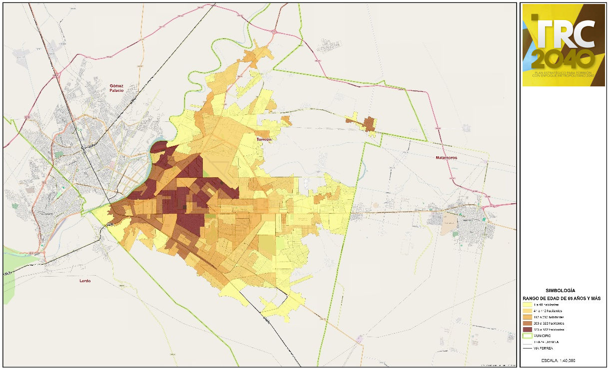

Como producto de la planeación metropolitana participativa en el eje Desarrollo Social fueron los siguientes:
- Percepción de riesgo a un posible retorno de la inseguridad
- Municipios con dificultades en materia de salud pública
- Problemas en la vocación educativa en la región
- Rezago en infraestructura cultural
- Escasa atención a los grupos vulnerables
A continuación se presenta cada uno de los problemas, sus características, causas y agravantes, así como los datos que respaldan esta perspectiva.
Percepción de riesgo a un posible retorno de la inseguridad
El tema de seguridad es altamente sensible para la población y para el desarrollo armónico de la Zona Metropolitana de La Laguna, especialmente para el desarrollo social.
Existen elementos que deben considerarse y atenderse, dentro de los cuales se destacan los siguientes:
- Mejorar el nivel de confianza en las autoridades y la percepción de efectividad al sancionar la delincuencia.
- Aumentar la transparencia de la gestión en índices delictivos.
- Garantizar el respeto a los derechos humanos.
Asimismo, es necesario avanzar en el diseño e implementación de políticas de prevención social, en el uso eficiente de los recursos destinados a seguridad, mejora en el equipamiento y condiciones laborales de los cuerpos policiales y en la creación de una policía de proximidad.
Por último, pero no menos importante, se debe fomentar la participación ciudadana en los temas de seguridad pública estableciendo mecanismos que lo regulen.
A continuación, algunos datos actuales en torno del tema de seguridad.
Participación Ciudadana
A pesar de que la Zona Metropolitana cuenta con 567 Organizaciones de la Sociedad Civil, lo cual significa una tasa por 100 mil habitantes del doble de la media nacional; únicamente 37 de ellas, contemplan dentro de su objeto social acciones que promuevan el fortalecimiento del tejido social y la seguridad ciudadana.
Capacidad policial
El único estándar internacional conocido sobre capacidad policial es que de acuerdo a la ONU para salvaguardar la seguridad ciudadana es de 2.89 policías por cada mil habitantes, este lineamiento data de 1979. Actualmente, Torreón cuenta con 1.12 policías municipales por cada mil habitantes, Matamoros 1.14, Gómez Palacio 0.95 y de Lerdo no se cuenta con información al respecto considerando que actualmente no cuentan con esta corporación como tal. De acuerdo a ello son 1,246 policías municipales en la ZML y se requerirían 2,428 adicionales para cubrir el estándar.
Delincuencia
Han disminuido considerablemente los delitos de alto impacto; sin embargo, se mantiene alto el número de robo común, por lo que resulta necesario reforzar los programas de prevención del delito.
Municipios con dificultades en materia de salud pública
En la Zona Metropolitana de La Laguna se requiere avanzar en la construcción y utilización de indicadores congruentes con las tendencias mundiales en salud pública, además de una base de datos para consulta y coordinación de acciones entre las instituciones del sector salud en los municipios de la zona.
También es necesaria una mayor inversión para mejorar la infraestructura orientada al sector salud y el equipamiento médico.
Algunos datos que apoyan esta visión y al mismo tiempo evidencian el potencial de mejora, se presentan a continuación.
Salud
De acuerdo con los datos proporcionados por el SINAIS (Sistema Nacional de Información de Salud) hasta el 31 de diciembre de 2013, el número de médicos por cada 10 mil habitantes en los municipios de la Zona Metropolitana de la Laguna se encuentra por debajo de la media nacional que es de 7.8; en este sentido, la tasa de médicos por cada 10 mil habitantes para el municipio de Torreón es de 2.5, Gómez Palacio 4.2, Cd. Lerdo 6.6 y para Matamoros de 3.
Mortalidad
A partir de los datos de 2012 proporcionados por el SINAIS, los municipios de la Zona Metropolitana de la Laguna que están por debajo de la tasa de mortalidad a nivel nacional (5.7) son Matamoros con 5.3, Gómez Palacio con 5 y Lerdo con 4.71, no así el municipio de Torreón que en dicho periodo se encuentra por encima de esa cifra con un 6.1, es importante resaltarlo ya que la mortalidad es un indicador indirecto de las condiciones de salud de una población. El análisis de la mortalidad se basa en el conteo, agrupación y clasificación de los datos que aparecen en el certificado médico de defunción.
Mortalidad infantil
La tasa de mortalidad infantil también es un indicador muy sensible del estado de salud de un país, región o comunidad. Según los datos proporcionados por el SINAIS de diciembre de 2012, los municipios de la Zona Metropolitana de la Laguna presentan una tasa alta: Torreón 12.2, Gómez Palacio 9.5, Lerdo 15.38 y Matamoros 17.39; se consideran altas si tomamos en cuenta que según el INEGI en 2013 la tasa en el país fue de 9.2.
Ilustración 2 Distribución de la población infantil de 0 a 14 años en Torreón

Fuente: Elaboración propia, 2015
Defunciones
Los datos que proporciona el SINAIS de diciembre de 2012 para los municipios de la Zona Metropolitana de la Laguna son los siguientes: Torreón con una tasa de 7 que representa un total de 446 defunciones, Gómez Palacio 6.7 con 231 defunciones, Lerdo 7 y 104 defunciones Matamoros una tasa de 8.8 que representa un total de 97 defunciones. A nivel nacional dicha tasa es de 9.2, lo cual coloca a la Zona Metropolitana un poco por debajo de esa cifra.
Vocación educativa en la región
Avanzar en el desarrollo social de la zona pasa por fortalecer la vocación educativa de la región, ello hace necesario un mayor compromiso social de las instituciones de educación superior de la región y una mayor vinculación con el sector productivo, social y gubernamental.
Para apoyar lo anterior, se debe revisar la información siguiente sobre rezago y competitividad educativa en la zona.
Rezago y competitividad educativa
De acuerdo a CONEVAL el rezago educativo en Torreón es de 10.83%, sin embargo, en Gómez Palacio, Lerdo y Matamoros es de 17.31%, 16.76% y 19.2% respectivamente.
En el mismo sentido de acuerdo a la última prueba ENLACE en Torreón, un 45% de los alumnos de primaria obtienen resultados buenos y excelentes en matemáticas, mientras que para Lerdo es del 40% y Gómez Palacio y Matamoros del 36%. Sin embargo, esta tendencia no se mantiene para alumnos de secundaria, grado en que el aprovechamiento baja notablemente y aumenta la deserción.
Rezago en la Infraestructura cultural
Existe rezago en infraestructura cultural para proyectos con perspectivas social y sustentable y las ligas deportivas existentes no consideran el tema de inclusión para todos los sectores de la población.
Fuente: Elaboración propia, 2015
Si bien hay avances en este tema, es necesario consolidar lo existente y avanzar en la cultura de la sustentabilidad y la inclusión. A continuación, unos datos que dan muestra de la situación actual en este rubro.
Arte, Cultura e Identidad
Centros Culturales
De acuerdo a CONACULTA se cuentan con 13 espacios culturales por cada 100 mil habitantes en la Zona Metropolitana de la Laguna. Incluidas en este dato se encuentran 20 bibliotecas públicas.
Patrimonio Arquitectónico
La Dirección de Centro Histórico que actualmente regula y resguarda el patrimonio arquitectónico del municipio, establece que 79 edificios se encuentran catalogados por el INBA y 81 por el INAH, de los cuales fueron demolidos 23, en las últimas dos décadas.
Fuente: Elaboración propia, 2015
Escasa Atención a los grupos vulnerables
Los cambios en la pirámide poblacional en la zona y las condiciones económicas y de inseguridad han generado un panorama que requiere una mayor atención a los grupos vulnerables de la población. A continuación, se presentan datos en torno a los principales grupos vulnerables en la Zona Metropolitana.
Grupos Vulnerables
Adultos mayores
Dentro de los grupos más vulnerables de la sociedad se encuentra el de los adultos mayores, el número en 2014 de estas personas en la Zona Metropolitana de La Laguna, así como su proyección para 2020 se presenta a continuación:
Tabla 5. Número de adultos mayores en la Laguna, dato 2014 y proyección 2020
| CIUDAD | 2014 | 2020 |
|---|---|---|
| TORREÓN | 45,139 | 57,846 |
| GÓMEZ PALACIO | 20,236 | 25,929 |
| LERDO | 9,479 | 11,717 |
| MATAMOROS | 7,447 | 9,196 |
| ZML | 82,328 | 104,688 |
Fuente: Elaboración propia, 2015
De acuerdo a los datos, en el corto plazo (5 años) el número de adultos mayores en la Zona Metropolitana de la Laguna crecerá en un 27% aproximadamente, agravando así la capacidad de atención de las instituciones públicas y privadas.
La distribución de la población de más de 65 años en Torreón se refleja en la siguiente ilustración:
Ilustración 5 Distribución de la población de 65 años y más en Torreón

Fuente: Elaboración propia, 2015
Personas con discapacidad
De acuerdo a los datos proporcionados por INEGI, en diciembre de 2010 el porcentaje de la población total de la Zona Metropolitana de La Laguna con alguna limitación (motriz, visión, auditivo, habla y/o cognitivas) es de 4.3 % lo que representa un total de 52,319 personas, siendo 28,939 en Torreón, 13,172 en Gómez Palacio, 5, 632 en Lerdo y 4,576 en Matamoros.
Maternidad Adolescente
Este es un problema que se agrava cada vez más en la Zona Metropolitana de la Laguna, sobre todo en los municipios que pertenecen al estado de Durango donde, según las autoridades de salud, en el 2013 el número de embarazos fue de 2000.
De enero a junio del presente año, Torreón ocupó el segundo lugar en embarazos adolescentes con 711 que representan el 20% del total de embarazos en menores registrados en el estado. En este mismo período Matamoros registró 139, cabe mencionar que durante 2013 Torreón registro un total de 1,804.
Los cuatro municipios de la Zona Metropolitana de la Laguna se encuentran por encima de la media nacional que fue en 2010 de 12.8 % de las menores de 14 a 19 años con al menos un hijo, mientras Torreón registró 13.9 %, Gómez Palacio 16.3%, Lerdo 17.2% y Matamoros 19.9%.
Índice | Siguiente: Entorno Urbano